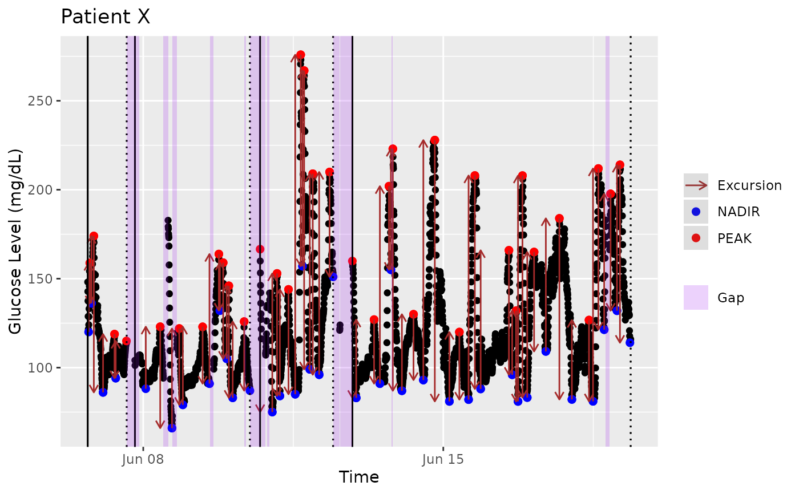

Calculates Mean Amplitude of Glycemic Excursions (see "mage")
Source:R/mage_ma_single.R
mage_ma_single.RdThis function is an internal function used `mage`. The function will calculate the Mean Amplitude of Glycemic Excursions (MAGE) on all the values of the inputted data set regardless of subject. To calculate separate MAGE values for a group of subjects, use the `mage` function.
Usage
mage_ma_single(
data,
short_ma = 5,
long_ma = 32,
return_type = c("num", "df"),
direction = c("avg", "service", "max", "plus", "minus"),
tz = "",
inter_gap = 45,
max_gap = 180,
plot = FALSE,
title = NA,
xlab = NA,
ylab = NA,
show_ma = FALSE,
show_excursions = TRUE,
static_or_gui = c("plotly", "ggplot")
)Arguments
- data
DataFrame object with column names "id", "time", and "gl". Should only be data for 1 subject. In case multiple subject ids are detected, a warning is produced and only 1st subject is used.
- short_ma
Default: 5. Integer for period length of the short moving average. Must be positive and less than `long_ma`. (Recommended <15)
- long_ma
Default: 32. Integer for period length for the long moving average. Must be positive and greater than `short_ma`. (Recommended >20)
- return_type
Default: "num". One of ("num", "df"). Will return either a single number for the "MAGE over the entire trace" (weighted by segment length) or a DataFrame with the MAGE value for each segment (see the MAGE vignette for discussion of handling large gaps by splitting trace into multiple segments).
- direction
Default: "avg". One of ("avg", "service", "max", "plus", or "minus"). Algorithm will calculate one of the following: MAGE+ (nadir to peak), MAGE- (peak to nadir), MAGEavg = avg(MAGE+, MAGE-), MAGEmax = max(MAGE+, MAGE-), or automatically choose MAGE+/MAGE- based on the first countable excursion (i.e., "service"). NOTE: the selection of peak-to-nadir or nadir-to-peak is chosen independently on each segment, thus MAGEservice may choose peak-to-nadir on one segment and nadir-to-peak on another, for example.
- tz
A character string specifying the time zone to be used. System-specific (see
as.POSIXct), but " " is the current time zone, and "GMT" is UTC (Universal Time, Coordinated). Invalid values are most commonly treated as UTC, on some platforms with a warning.- inter_gap
The maximum allowable gap (in minutes) for interpolation. The values will not be interpolated between the glucose measurements that are more than inter_gap minutes apart. The default value is 45 min.
- max_gap
Default: 180. Integer for the maximum length of a gap in minutes before the trace is split into segments and MAGE is calculated on each segment independently.
- plot
Default: FALSE. Boolean. If `TRUE`, returns a plot that visualizes all identified peaks and nadirs, excursions, and missing gaps. An interactive GUI can be loaded with `static_or_gui = 'plotly'`.
- title
Default: "Glucose Trace - Subject [ID]". Title for the ggplot.
- xlab
Default: "Time". Label for x-axis of ggplot.
- ylab
Default: "Glucose Level". Label for y-axis of ggplot.
- show_ma
Default: FALSE. Boolean. If TRUE, plots the moving average lines on the plot.
- show_excursions
Default: TRUE. Boolean. If TRUE, shows identified excursions as arrows from peak-to-nadir/nadir-to-peak on the plot.
- static_or_gui
Default: "plotly". One of "ggplot" or "plotly". Returns either a ggplot (static image) or Plotly chart (interactive GUI).
Value
A ggplot or Plotly chart if plot = TRUE, depending on static_or_gui. Otherwise, a numeric MAGE value for the inputted glucose trace or a DataFrame with the MAGE values on each segment, depending on return_type.
Examples
data(example_data_1_subject)
mage_ma_single(
example_data_1_subject,
short_ma = 4,
long_ma = 24,
direction = 'plus')
#> [1] 73.47135
mage_ma_single(
example_data_1_subject,
inter_gap = 300)
#> [1] 79.72259
mage_ma_single(
example_data_1_subject,
plot=TRUE,
static_or_gui='ggplot',
title="Patient X",
xlab="Time",
ylab="Glucose Level (mg/dL)",
show_ma=FALSE)
